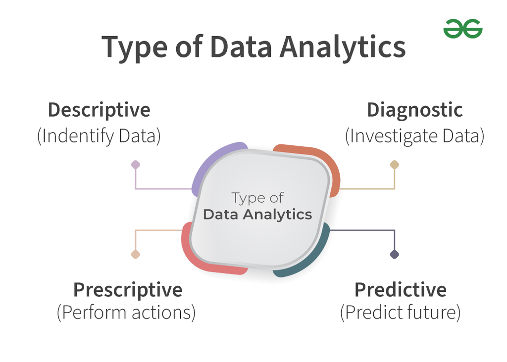

What Is Web Devlopment?
10/12/2025

Web devlopment is the process of building websites .
It include designing the layout ,creating the logic
,and making everything work smoothly.
- Front-end devlopment: Creating the visible, client-side parts of websites.
- HTML(Hyper Text Markup Language):
> The structure of any websit,
Includes Text, Images and Links.
- CSS(Cascading Style Sheet):
> The Style of an Web page, Includes Layout, Colors, Fonts and Responsiveness
- JavaScript:
> Adds interactive and dynamic behaviour to websit, Includes Animation, Forms
validation and more
Back-end devlopment: Building the server -side logic that powers websites behind the
scenes.
- Python : Used for web servers, data analysis, and AI applications
- JavaScript(Node.js): Runs JavaScript code on servers insted of just browser
- PHP : Powers many large website like Facebook and Wikipedia
- Java : Helps with large-scale application and Android devlopment
- C# : Microsoft's language for Windows and web applications
Full-stack devlopment: handling both front-end and back-end.
Web devlopment is aall about creating useful, fast, and beutiful websites.
What is Dat Analytics?
11/12/2025

Data Analytics is the process of Collecting,Organizing and Studying data to find useful information
understand What's happening and make better decision
It helps people and buisnesses learn from data like what worked in the past, what is happening now and
what might happen in future.
Skills Required for Data Analytics
- Some of the common programming language which are used are and Paython
- For Databases Structure Query Language (SQL) is a programming language used.
- Machine Learning is used in data analysis.
- For Collecting and organising data, Data Management is used in data analysis.
- To use charts and graph Data Visulisation is used.
Data analytics help buisnesses grow by tuurning raw data into useful insights. it supports smartert
decision, better plannning and improve customer service across many industries not just fianance.

-
Descriptive Analytics:
> Summerrize and understand past data.
> companies use it to compare results, find strength and weeknesses and spot any unusual
patterns
- Dignostic Data Analytic:
Looks at why something happened in the past
companies use it to understand the reason behind ddrop in sale
- Predectivee Data Analytics:
Used to guess what might happen in future
Buisnesses use it to predict things like customer behaviour, future sales and possible risk.
What is Endpoint Security?
11/12/2025

Endpoint Security protects devices from unauthorized access and threats.
Endpoint Security Threat.
- Malware
> Refers to common digital threats such as viruses, trojans horses, and worms. while there is an influx
od new malware eachday
> Tools including antivirus software and firewalls help protect against these threats and are supported
by global technology provider like Microsoft and intel,who are
constantly updating their threat defination databases.
- Cryptojacking
> Refers to the practice of running unauthorized cryptomining code on an endpoint device.
> Cryptomining is the process of authenticating cryptocurrency transictions for a small cryptocurrency
reward.
Hacker may install malware on vulnerable endpoint device that runs cryptomining code as background
process, causing a significant drain on performance.
-
Ransomware
> locks down an end point device and directs users to submit a payment
> By restore acsses,under threats of erasing all data on the device if a payment isn't provided.
-
Phising
> Occurs when hackers send fraudulent emails or messages.
> The attempt to get unsuspecting workers to follow hyperlinks to compromised websites,download malware,
or grant device permission to unauthorized users.
-
Zero-day attacks
Refers to priviously unknown exploits for which there is no remedy. and limit the scope of damage or
losses.